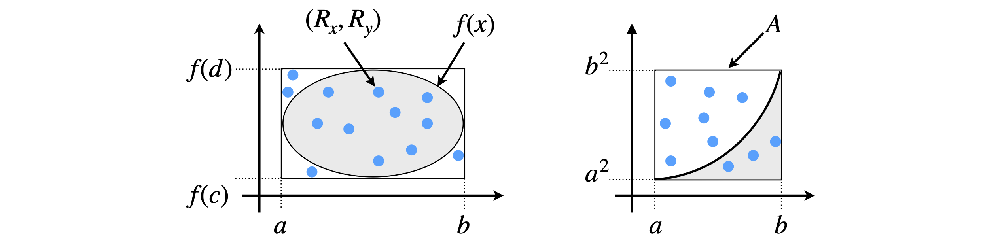
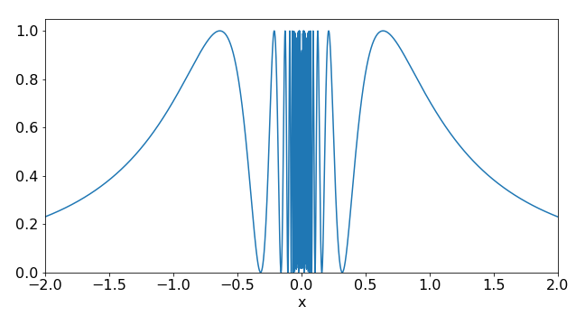

1 Monte - Carlo integration & importance sampling
Contents
1 Monte - Carlo integration & importance sampling#
%matplotlib inline
import numpy as np
from sympy import *
init_printing() # allows printing of SymPy results in typeset maths format
import matplotlib.pyplot as plt
plt.rcParams.update({'font.size': 16}) # set font size for plots
1.1 Integration#
To use a Monte Carlo method to numerically integrate a function, the area corresponding to the integral is calculated by repeatedly guessing pairs of \(x\) and \(y\) values at random and evaluating the function \(y = f (x)\) to see whether or not \(y\) lies within the area bound by the integral, Figure 1. Clearly many guesses will be needed and while many will fall inside the required region, many will not. The ratio of correct guesses to the total number is proportional to the integral. The more guesses that are made, the closer the answer becomes to the true value. The error can then be estimated and the calculation truncated when a satisfactory result is achieved.
There are two considerations. First, the computer generated random numbers must actually be random, or as near random as possible. These are usually described as being pseudo-random. The randomness of numbers is a complicated issue, but if Python and similar programs are used, then the (pseudo) random number generators can be relied upon; (Prest et al. 1986 give details about random number generators.) Python uses the Mersenne Twister as the core generator,which produces 53-bit precision floats and has a period of \(2^{19937}-1\) which is a number about 6000 digits long. The second consideration is that numbers should be taken from a uniform distribution. A uniform distribution is one in which the chance of obtaining any number in a given range, which may be 0 to 1 but is normally \(a\) to \(b\), is the same no matter where the number is in that range. In other distributions, this is not true; a Gaussian distribution has more chance of returning a number near to its mean value than elsewhere.
Figure 1 explains the Monte Carlo integration method. The integral is \(Q = \int_a^b f(x)dx\). Two uniformly distributed random numbers are chosen; one \(R_x\) between \(a\) and \(b\) and another \(R_y\) between limits \(f(c)\) and \(f(d)\), where the points \(c\) and \(d\) must be chosen to include the minimum and maximum of the function in the range \(a\) to \(b\). A large number of pairs of points are chosen, those for which \(R_y \le f(R_x)\) are found and then counted up. The integral is approximated as
where \(A\) is the integration area, see Figure 1. If the function is \(f (x) = x^2\), and \(R_x\) and \(R_y\) are random guesses in the range \(a \to b\) in \(x\), and \(a_2 \to b_2\) in \(y\), respectively, only if \(R_y \le R_{x^2}\) is the point counted as being within the function. This approach is clearly rather wasteful; less than half of the points fall within the area for \(x^2\) although this is better for an ellipse, because most of the ellipse fills the rectangular area. In practice, this method, while easy to implement would never be used; the mean-value method described next works far better and involves only a little more analysis.

Figure 1. Monte Carlo integration; guess pairs of numbers inside the box and count how many are within the area defined by the function \(f(x)\). \(A\) is the area in which the integration is performed. This method while simple is wasteful and there better methods, such as the mean value methods that can be used.
The random nature of guessing means that standard statistical analysis methods can be used to estimate the error in the integration just as with a real set of data. If the average (mean) value of the integral calculated is \(\langle f \rangle\) with \(n\) evaluations, then the error or standard deviation is
The function \(\sin^2(1/x)\) is symmetrical about \(x = 0\) and oscillates ever more rapidly as it approaches zero; see Figure 2. The integral has no algebraic solution but one that involves the sine integral, which has to be evaluated numerically. The integral can, however, be estimated by the Monte Carlo method without using any algebra. The range of \(y\) is \(0 \to 1\), because the maximum of the function is 1, and we choose \(x = 0 \cdots 2\) so that two random numbers in these ranges are needed. The area of the integration box is \(A = 2\) because the \(y\) range is 1. The Monte Carlo method equation 1 is illustrated below. The random number is called using numpy/python function \(\mathtt{np.random.ranf()}\) as this generates a floating point number in the range \(0 \to 1\). This is then adjusted to fall in the range of the \(x\) and \(y\) limits as \(R_x\) and \(R_y\) respectively. The method works by adding one to the total \(s\) if the function at \(R_x,(\; f(R_x) )\) is greater than \(R_y\).

Figure 2. The function \(\sin^2(1/x)\). The figure’s resolution is not good enough to show the central part accurately on the scale used.
# Algorithm: Basic Monte-Carlo integration
#np.random.seed(123456) # used to check; seed always gives same random numbers
f = lambda x: np.sin(1.0/x)**2
n = 2000 # number of guesses
xlim_a = 0.0
xlim_b = 2.0
ymax = 1.0
s = 0.0
A = (xlim_b - xlim_a)*ymax
for i in range(n):
Rx = (xlim_b - xlim_a)*np.random.ranf() + xlim_a # get random numbers from a to b
Ry = ymax*np.random.ranf()
if Ry <= f(Rx):
s = s + 1 # summ to get result
pass
av_f = A*s/n # estimate
print('{:8.4f}'.format(av_f) )
1.0730
A typical result with \(2000\) evaluations lies in the range \(1.06 \to 1.1\), which is fairly close to the exact value of \(1.084\). However, many function evaluations (\(200000\)) are needed to get close to this exact value. Even with a minimal box size a Monte Carlo method always involves many evaluations of the function and this method really only comes into its own when the integrations involve many dimensions \(d\), ‘many’ being greater than four. The number of strips \(N\), and hence evaluations needed for the trapezoidal or Simpson’s method, (see Chapter 11.3.3 and 11.3.4), to produce a given accuracy, increases in proportional to \(1/N^{2/d}\), whereas the number needed by Monte Carlo for similar accuracy only increases as \(1/ \sqrt{N}\) and is independent of the dimension.
1.2 Mean-value method#
By the mean-value theorem (Chapter 4.2.12) an integral of the function \(f(x)\) can shown to be given by
where \(f(x_m)\) is the value of the function at the point \(x_m\). As an integral is equal to an area, then \(f(x_m)\) is equivalent to the mean value of the integral if we imagine the area \((b - a)f(x_m)\) as width multiplied by height. Let us see if there really is such a point \(x_m\) by trying an integral whose value we know.
Suppose the integral is
by the mean-value theorem this should be equal to \((4 - 2)e^{x_m}\) making \(x_m = 3.1614\), which is a real number within the limits of the integral. Since \(2e^{3.1614} = 47.209\), which is equal to the integral, this proves that the point \(x_m\) exists. To calculate this integral by the Monte Carlo method, the mean-value equation is rewritten as,
where \(\langle f(x_m) \rangle\) is the average value of the function calculated over the range \(a\) to \(b\). Clearly, for a closed symmetrical function such as an ellipse, Figure 1, the limits \(a\) and \(b\) must be chosen so that the mean does not turn out to be zero.
A two dimensional integral is in general \(\displaystyle \int_a^b\int_c^d f(x,y)dxdy\), for example this might be \(\displaystyle \int_0^2\int_0^1 \sqrt{4-x^2-y^2}dxdy\) where the limits 0 , 1 refer to the integration in \(x\). In this case the Monte-Carlo method and mean- value theorem give
Two random numbers are now chosen from a uniform distribution, which are \(x_i\) and \(y_i\) and the average of the function is calculated as a summation. The extension of this formula to more than two dimensions is done in a similar way.
This Monte Carlo method is now used to calculate the integral of \(\sin^2(1/x)\) again. This is rather a difficult integral because the function oscillates close to zero. The trapezoidal or Simpson methods are generally more efficient (see Chapter 11.3.3 and 11.3.4), but in this case the rapid oscillations require that these methods also have to use a large number of points. The following algorithm will evaluate an integral of the function and its standard deviation, which is calculated as shown in equation 2. The average values are multiplied by the \(x\) range \(\mathtt{xlim_b - xlim_a}\) as in equation 3. The answer obtained for this integral depends on the actual calculation as for all Monte Carlo methods. Even with \(20000\) evaluations, this result has a large standard deviation of approximately \(\pm 0.004\). As a check, Sympy produces the accurate result of \(-\mathtt{Si}(1)-\cos(1)+1+\pi/2=1.0844\) where \(\mathtt{Si}\) is the sine integral.
# Algorithm: Monte-Carlo Mean value method
f = lambda x: np.sin(1/x)**2 # function to integrate
xlim_a = 0.0
xlim_b = 2.0
n = 5000
s = 0.0
s2= 0.0
for i in range(n):
x = (xlim_b - xlim_a)*np.random.ranf() + xlim_a # limits a to b
s = s + f(x)
s2= s2 + f(x)**2
pass
av_f = ( xlim_b - xlim_a )*s/n
av_f2= ( xlim_b - xlim_a )**2*s2/n
sig = np.sqrt((av_f2 - av_f**2)/n )
print('{:8.4f} {:s} {:8.4f}'.format( av_f, '+/-', sig ) )
1.0837 +/- 0.0080
1.3 Non-uniform distributions: Importance Sampling#
It is easy to imagine functions that are large in only small regions of \(x\) and are virtually zero elsewhere; the bell-shaped Gaussian curve being one example. So far a uniform random number distribution has been used to numerically evaluate an integral, but this can waste a lot of effort by repeatedly calculating contributions to the integral that are effectively zero. In some instances, an incorrect result may even be obtained with this approach, see for example Krauth 2006. A better method is to use a non-uniform distribution to bias sampling and to add in more of those values that have a large contribution to the integral, and less of those that do not. This is sketched in the figure where many samples are taken where the function is large.
In simulating a number of physical processes, such as the mean energy of an oscillator at a given temperature, or of an array of spins whose energies are distributed by the Boltzmann distribution, and many other examples in statistical mechanics and molecular dynamics, a biased sampling method, called the Metropolis Algorithm is used. This is described in Section 4.
In Monte Carlo sampling, the standard deviation is reduced as \(\sigma =Q/\sqrt{N}\) for \(N\) samples and \(Q\) is a constant that depends on the particular problem being solved. Increasing the number of samples \(N\) will obviously reduce the standard deviation, but only slowly; additionally \(N\) may in practice be limited, because it is proportional to the time the computer takes to do the calculation. However, it turns out that importance sampling can reduce \(Q\) and therefore \(\sigma\) by carefully selecting where the samples are taken. This can be done if the function being integrated is changed to another that is effectively ‘flatter’. Suppose, therefore, that the integral is multiplied by \(p(x)/p(x)\) which is 1, and written as
where \(p(x)\) is a function we need to guess. Preferably, it has the same shape as \(f(x)\) so that on division the ratio \(f(x)/p(x)\) is approximately constant. The remaining \(p(x)\) is converted into a normalized distribution function to provide values of \(x\) distributed as \(p^{-1}\). The inverted distribution, which we shall call \(t\), is \(t = p^{-1}(r)\) and \(r\) is a random number in the range \(0 \to 1\). The choice of \(p\) is limited to functions that can easily be inverted, such as \(e^{-x}\); otherwise, a numerical way of inverting the function has to be used which will involve a lot of unnecessary calculation.
If the integral to be evaluated is \(\displaystyle \int_0^b e^{-x^2}dx\), the starting point is to choose a distribution function \(p\). The Gaussian \(e^{-x^2}\) is an obvious choice but this can only be inverted numerically, such as with the Box - Muller algorithm (Weisstein), and therefore we will instead try \(p(x) = e^{-x}\), which has a similarly decaying form when \(x \gt 0\). (As the Gaussian is symmetrical, limits \(\lt\) 0 can easily be calculated). The next step is to make a distribution function out of \(p\) over the limits of the integration. The cumulative distribution up to a point \(t\) is defined as \(\displaystyle \int_{-\infty}^t p(x)dx = r\). This is the chance (probability) of choosing a value less than or equal to \(r\).
Defining the function \(p\) as \(p(x)=ke^{-kx}\) when \(0 \le x \le \infty\) , and zero for negative \(x\), and if \(k\) is a constant, then
The second step is to normalize the distribution over the range of the integration, which is the integral \(\displaystyle \int_0^b e^{-kx}dx = \frac{(1 - e^{-kb})}{k}\). Finally, the normalized cumulative distribution is \(\displaystyle \frac{1-e^{-kt}}{1-e^{-kb}}\) and rearranged this gives the inverted distribution,
when \(r\) is a uniform random number between zero and one. The same procedure can be followed for any function \(p(x)\) provided \(p^{-1}(x)\) can be calculated.

Figure 3 Schematic of importance sampling, more samples are taken where the function is greatest.
The general Importance Sampling algorithm is now straightforward:
(1)\(\quad\) Choose a distribution \(p(x)\), normalize, and invert. \(p(x)\) should have a shape similar to \(f (x)\).
\(\quad\)Integrate \(p\) from \(-\infty \to t\) to give \(I_t\).
\(\quad\)Integrate \(p\) between limits \(a \to b\) to find the normalisation.
\(\quad\)Invert normalized cumulative distribution to give \(t = \text{some function}(r)\).
(2)\(\quad\) Start Monte-Carlo. Loop over the number of trials
\(\quad\)Calculate \(t\) from random number \(r\) in range \(0 \to 1\)
\(\quad\)Calculate the sum of \(N \cdot f (t)/p(t)\) and its square to find std. dev.
\(\quad\)End loop
(3)\(\quad\) Calculate the average.
A possible code to do this in python is shown below. The square of the sum of the terms is also calculated so that the standard deviation of the result can be determined. In the calculation, a value of \(k = 1\) was chosen; other values could be tried and the standard deviation observed.
# Algorithm: Importance Sampling Monte Carlo Integration using p(x)=kexp(-kx)
f = lambda x: np.exp(-x**2) # function to integrate
p = lambda x: np.exp(-k*x) # sampling function
k = 1.0 # constant and limits
a = 0.0
b = 2.0
c = np.exp(-k*a) - np.exp(-k*b) # constant in r =Integration/Normalise
N = (np.exp(-k*a) - np.exp(-k*b))/k # normalisation
s = 0.0 # summation
s2= 0.0
n = 20000 # number of trials
for i in range(n):
t = -np.log( 1.0-np.random.ranf()*c)/k # get random value
Q = N*f(t)/p(t) # get sampled values eqn 7
s = s + Q
s2= s2 + Q**2
pass
av_f = s/n # average of integration
av_f2= s2/n # average **2
std_dev = (np.sqrt((av_f2 - av_f**2)/n))
print('{:s} {:f}{:s} {:f} '.format( 'integral = ',av_f,' +/-',std_dev ) )
integral = 0.883313 +/- 0.001881
The result is that the integral typically has the value \(0.882\pm 0.002\). The same integral, calculated by the mean-value method, had an error ± 0.01, which is a considerably larger error for the same number of samples. The accurate result is \(0.88208\).
1.4 Limits tending to infinity#
Integration limits that tend to \(\pm \infty\) can present a particular problem for any numerical method. A way of solving this is to try to look at the function at large values of \(x\). Often the function will become negligible and while, technically, the integral may go to infinity the numerical value may have converged to a sensible answer well before this. See question Q6 for an example of this.